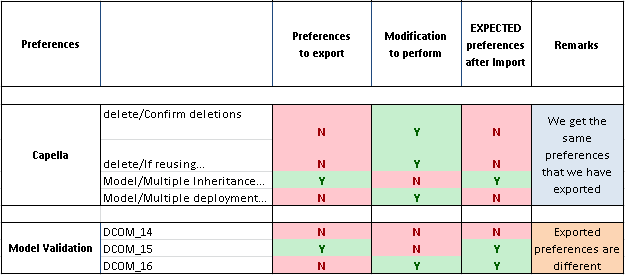

Capella Configurability feature allows to configure the application for a custom usage. Commands, validation rules and other Capella features can be customized using the standard Eclipse preferences mechanism.
There are three possible solutions to set a custom configuration:
The second solution overrides the first one. The third solution overrides the second one.
The basic idea is to disable/enable Eclipse preferences in the standard dedicated pages and then rely on export/import mechanisms to share them or configure a selected Capella Project.
The following preferences are available:
 Migration features from one version to another are not supported for preferences configuration files (workspace preferences, Capella project specific preferences or Capella configuration project). Between minor versions (no modification of interfaces) these files shall be compatible (except if a validation rule referenced in a validation profile for instance is updated after a problem correction for instance).
Migration features from one version to another are not supported for preferences configuration files (workspace preferences, Capella project specific preferences or Capella configuration project). Between minor versions (no modification of interfaces) these files shall be compatible (except if a validation rule referenced in a validation profile for instance is updated after a problem correction for instance).
Workspace preferences are set using the standard Eclipse preferences page Editor available from menu window > Preferences.
Capella projects use by default Workspace preferences.

Fig.1: Setting Workspace preferences
Workspace preferences can be exported using the Export wizard. Right click in the Capella Project Explorer and choose Export.

Fig. Lauching the export wizard
In the export page choose Preferences and click Next.

Fig. Export Preferences Wizard
Choose the preferences to export and click on Finish to save them to a file in a Capella configuration project or in the file system.
Validation preferences can be exported only if there are different from the default settings. If you change validation workspace preferences you can export them.

Fig. Setting validation preferences

Fig. Exporting validation preferences
Preferences can be imported using the Import wizard. Right click in the Capella Project Explorer and choose Import.

Fig. Launching the import wizard
In the export page choose Preferences and click Next. In the next page you can choose which preferences you want to import.

Fig. Choosing preferences to import into the workspace
To show how the workspace preference export/import mechanism works let’s consider the following scenario:
The following table gives the set of preferences in each step.


You can choose to import only MA preferences and not validation ones to let the latter unchanged. You can also use a validation profile to get exactly the validation preferences that was exported.
Workspaces can be initialized at Capella startup using the following command line argument:
-EPF <absolute/path/to/file.epf>
Capella will initialize the Workspace with the preferences stored in the provided file.
To show how the workspace initialization with –EPF argument works let’s consider the following scenario:
The following table gives the preferences in each step
Capella Project specific preferences can be set on a Capella project to override Workspace preferences.
Capella Project specific preferences are set by right clicking on the project in Capella Project Explorer, and choosing properties menu.
| To see .settings folder containing these local preferences, filtered by default, go to Capella Project Explorer and select “Customize View…” dialog, uncheck “*.resources” choice. | |
| Capella Project specific preferences will override Workspace preferences. | |

Fig.2: Setting Capella Project specific preferences
| Note that the Transitions/Generation preference category has a workspace scope. Thus, it is not possible to configure this preference category for a specific project. |
| Creating project specific preferences overrides workspace preferences. To go back to Workspace preferences all you need is to delete the “.settings” folder from the project. |
Capella Configuration Projects can be used to externalize preferences settings, thus enabling to reuse them on several projects. They can be referenced by any Capella projects to reuse the saved preferences saved in this configuration.
Capella Configuration Projects can be created by right clicking in the Capella project explorer and choosing "Capella Configuration Project" menu.

Fig.: Capella Configuration Project creation wizard
Capella Configuration Project is used to store a specific configuration of preferences. Capella projects can reuse the preferences set on the Capella Configuration Project by referencing it.
Referencing a Capella Configuration Project is done by right clicking on a Capella project, choosing properties and selecting projects to reference in Capella Project References option.

Fig.: Referencing Capella Configuration project
| Referencing a Capella Configuration Project from a Capella project will override Capella Project specific preferences and Workspace preferences for this project. |
Validation profile is a mean to specify validation rule sets, thus enabling configuration reuse during validation of Capella model elements.
Validation profiles are created via Capella Export Preferences wizard and stored in standard Eclipse preferences files (with “.epf” file extension). Validation rule sets can be configured via Window > Preferences menu and exported with the Export Preferences wizard.
Exported preferences (Validation profiles) can be stored into a Capella Configuration Project or to another path into the file system. Storing exported preferences to Capella Configuration Project enables reusing them for Capella model validation.

Fig.: storing exported validation preferences to a Capella Configuration Project
Validation profiles (preferences files stored into Capella Configuration Project) can be used during validation of Capella model elements. To enable this usage on a Capella project, a Capella Configuration Project containing at least one preferences file has to be referenced. All referenced validation profiles are then available during validation.

Fig.: Using Validation profiles preferences for validation